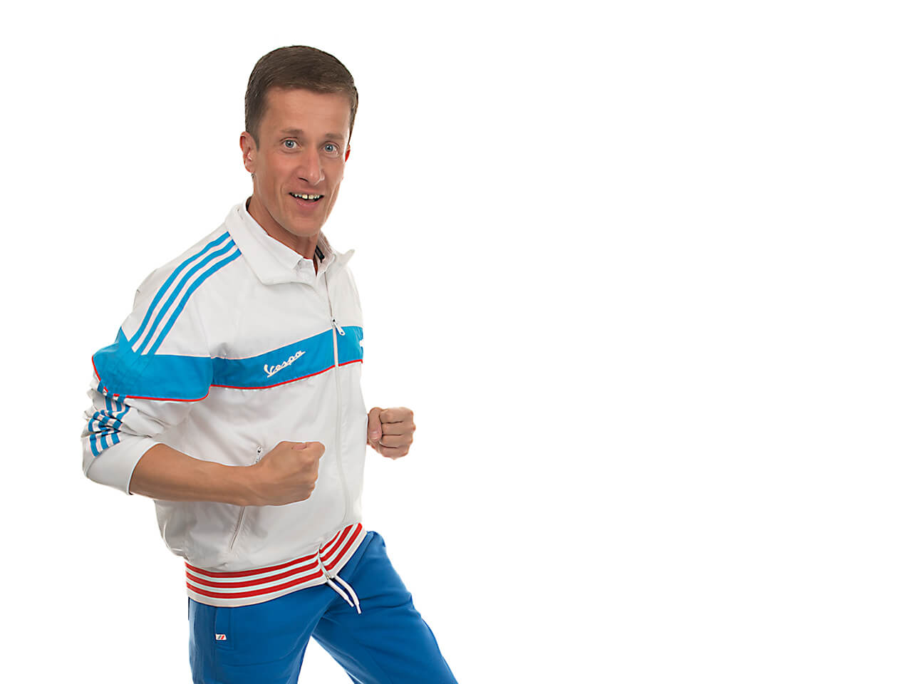

Bist du vor dem Wettkampf oder vor dem Training oft müde und fühlst dich ausgelaugt? Hierfür gibt es die Möglichkeit dich über deine Ohren zu aktivieren und zu motivieren. Eine oder zwei Liedlängen genügen hier völlig. Diese Lieder lassen sich optimal in deinen Ablauf vor deinem Wettkampf integrieren. Die Auswahl der Lieder solltest du in jedem Fall selbst treffen. Auf dem Schießstand hilft dir ein Kopfhörer, um dich von allen anderen abzuschotten und zu aktivieren.
Wenn du deine Konzentration, Motivation und deine mentale Stärke über diese Übungen hinaus verbessern möchtest, ist der Mentalcoach Markus Koch die richtige Adresse für dich. Im einem seiner erfolgreichen Videokurse oder im persönlichen Workshop bietet dir der erfahrene Trainer Markus Koch alles rund um das Thema „Mentaltraining“.
